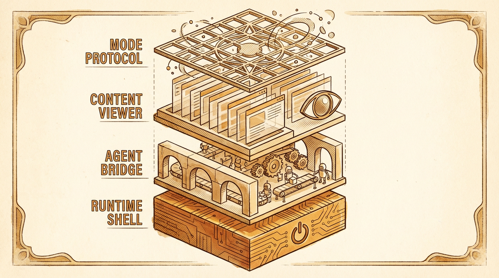

Consider the humble file system. It is, in essence, a shared medium — a place where both human and machine can read, write, and observe changes. For decades, this shared medium was invisible to most users, hidden behind application interfaces that abstracted away the very thing that made collaboration possible. The recent emergence of co-creation infrastructure has, in a sense, returned the file system to prominence, placing it at the center of a new architectural paradigm.
The paradigm is built on a deceptively simple insight: if an agent edits files on disk, and a human sees the rendered result in real time, then both parties share a common representation of reality. The translation problem — the eternal friction of describing visual intent in words — is not eliminated but dramatically reduced. The human points at what they see. The agent understands the file that produces it. A continuous loop forms.
The Four-Layer Stack

The architecture that enables this collaboration is organized into four distinct layers, each with a clear contract boundary. At the foundation sits the runtime shell: HTTP servers, WebSocket bridges, file watchers, and the frontend rendering engine. This layer knows nothing about presentations or documents or diagrams — it simply moves data between endpoints.
Above it, the agent bridge manages the lifecycle of the AI agent itself. Launch, resume, kill. Currently implemented for Claude Code via the undocumented --sdk-url WebSocket protocol, this layer is designed to accommodate other backends: Codex CLI, Aider, or entirely custom agents. The abstraction is deliberate. The infrastructure should outlast any particular AI model.
The content viewer, layer three, defines how files become visual experiences. A ViewerContract specifies the preview component, the element selection mechanism, and the context extraction pipeline that tells the agent what the user is looking at. This is where the bidirectional magic happens: the user clicks an element, the viewer extracts its file coordinates, and the agent receives a structured context block describing exactly what needs to change.
At the top sits the mode protocol. A ModeManifest is a pure data declaration — no React dependencies, no runtime coupling — that describes what a mode is: its skill prompt, its viewer configuration, its agent preferences, its seed templates. To add a new mode, you implement this interface. The system discovers and loads it automatically.
The translation problem — the eternal friction of describing visual intent in words — is not eliminated but dramatically reduced.
Skills That Evolve
Perhaps the most conceptually ambitious aspect of this architecture is its approach to learning. Traditional software treats configuration as static: you set your preferences once, or perhaps they drift over time through accumulated changes to settings files. The evolution agent takes a fundamentally different approach.
It works like this: after multiple sessions of collaboration, the evolution agent is invoked to mine conversation history. It looks for patterns — not just explicit preferences ("I prefer sans-serif fonts") but implicit ones revealed through the arc of edits and revisions. A user who consistently adjusts spacing after the agent’s initial attempts reveals a preference for different spatial density. A user who repeatedly asks for bolder typography reveals an aesthetic direction.
These patterns are surfaced as proposals, each backed by evidence citations from actual conversations. The user reviews them, approves or rejects, and the approved patterns are integrated into the skill prompt for future sessions. The agent doesn’t just remember — it adapts.
The Marketplace Thesis
The distribution story completes the picture. A mode, once developed, is a self-contained package: manifest, skill files, viewer component, seed templates, export pipeline. It can be published to a registry, installed with a single command, and immediately used by anyone. The Mode Maker — itself a mode, in a satisfying act of self-reference — provides AI-assisted development: fork an existing mode, modify it with Claude’s help, test it in an isolated instance, and publish.
This creates a flywheel. More modes attract more users. More users generate more conversation history. More history enables better evolution. Better evolution produces more refined modes. The architecture, in other words, is not just infrastructure for collaboration — it is infrastructure for the continuous improvement of collaboration itself.
Whether this thesis holds will depend on adoption, on the quality of modes that emerge, and on the willingness of users to trust an AI agent with access to their creative history. But the architectural foundation is, at least, sound: four clean layers, three typed contracts, and a file system at the center of it all — the oldest shared medium in computing, pressed into service for its newest purpose.